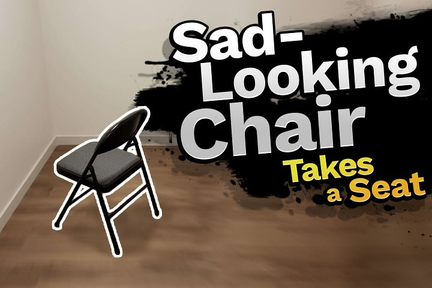
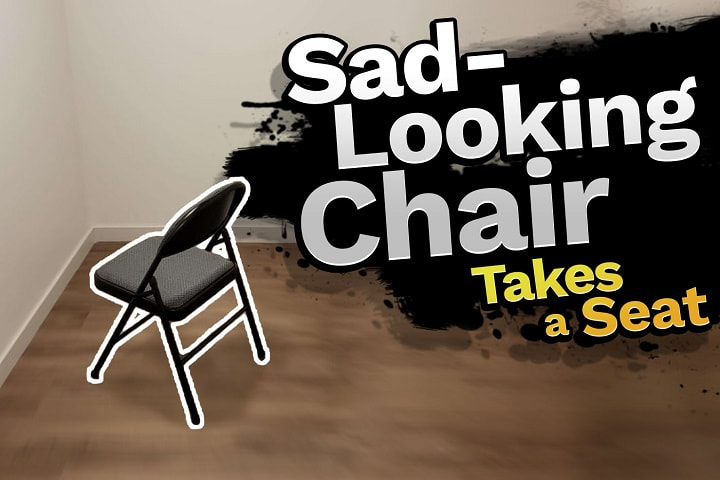

Miscellaneous Image Editing
From touch-ups, to parodies, to original graphic design work, I have loved image editing since I first learned how. Editing people/characters into other media, learning brands' design languages, adjusting colors and details to change the tone of an image, and even intentionally mimcking things like compression artifacts and the hallmarks of images created in particular ways—and then, of course, combining those all together.
Some projects in which I used these skills include:
And here are some more fun examples:
 

And while it isn't going to replace my go-to image editing software, I also enjoyed putting this edit together years back exclusively with MS Paint!